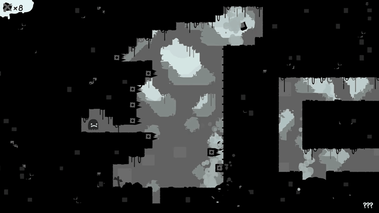

Criando um jogo indie com engenharia reversa
A engenharia reversa de jogos envolve descompilar, analisar o código executável ou examinar arquivos de dados (como texturas, modelos, scripts e tabelas de memória) para entender como o jogo funciona. O Claude pode atuar como um co-piloto e assistente de análise de código extremamente eficiente durante esse processo.
Embora o Claude não consiga abrir ou executar arquivos binários diretamente (.exe, .dll, .so), ele é excelente para traduzir, interpretar, documentar e reescrever o código extraído por ferramentas de reverse engineering.
Destaques
- Experiência com Claude
- Noções de game design
- Noções de desenho
